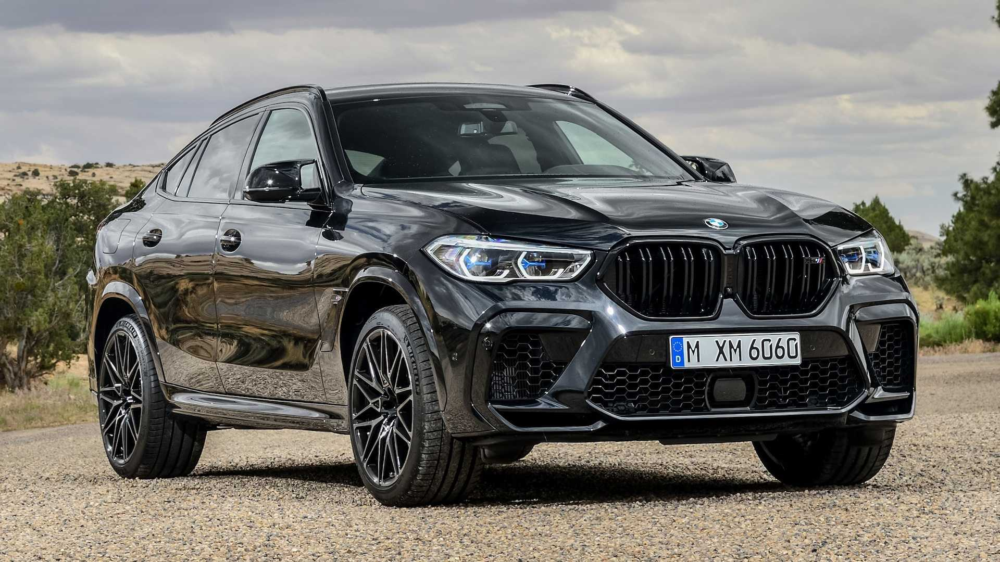
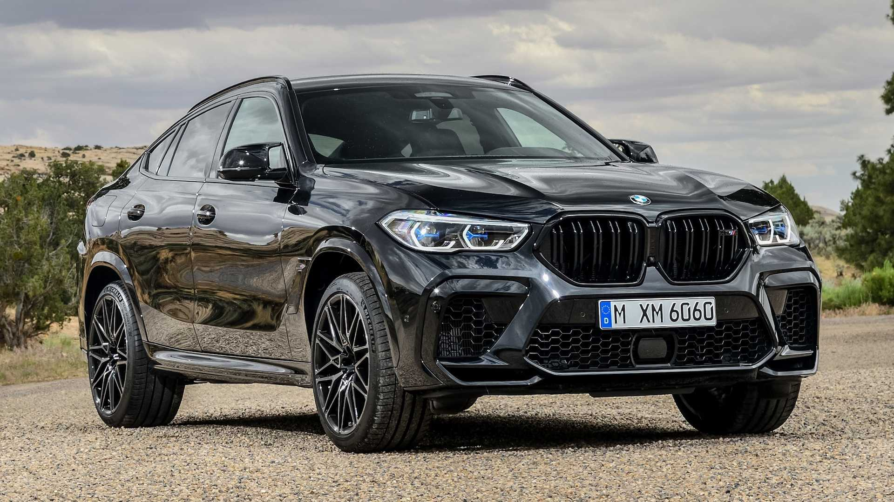

The official founding date of the German motor vehicle manufacturer BMW is 7 March 1916, when an aircraft engine manufacturer called Bayerische Flugzeugwerke AG was formed. This company was renamed to Bayerische Motoren Werke (BMW) in 1922. However the name BMW dates back to 1913, when the original company used the name BMW (which in German appears as Rapp Motorenwerke). BMW's first product was a straight-six aircraft engine called the BMW IIIa. Following the end of World War I, BMW remained in business by producing motorcycle engines, farm equipment, household items and railway brakes. The company produced its first motorcycle, the BMW R 32 in 1923.
Aircraft engines, motorcycles, and automobiles would be BMW's main products until World War II. During the war, against the wishes of its director Franz Josef Popp, BMW concentrated on aircraft engine production, with motorcycles as a side line and automobile manufacture stopped altogether. BMW's factories were heavily bombed during the war and its remaining West German facilities were banned from producing motor vehicles or aircraft after the war. Again, the company survived by making pots, pans, and bicycles. In 1948, BMW restarted motorcycle production. BMW resumed car production in Bavaria in 1952 with the BMW 501 luxury saloon. The range of cars was expanded in 1955, through the production of the cheaper Isetta microcar under licence. Slow sales of luxury cars and small profit margins from microcars meant BMW was in serious financial trouble and in 1959 the company was nearly taken over by rival Daimler-Benz. A large investment in BMW by Herbert Quandt and Harald Quandt resulted in the company surviving as a separate entity. The BMW 700 was successful and assisted in the company's recovery.
BMW's motorcycle history began in 1921 when the company commenced manufacturing engines for other companies. BMW's own motorcycles— sold under the BMW Motorrad brand— began in 1923 with the BMW R 32,[22] which was powered by a flat-twin engine (also called a "boxer-twin" engine). Production of motorcycles with flat-twin engines continues to this day, however BMW has also produced many models with other types of engine.
BMW's production of automobiles began in 1928, when the company purchased the Automobilwerk Eisenach car company from Gothaer Waggonfabrik. Eisenach's current model was the Dixi 3/15, a licensed copy of the Austin 7 which had begun production in 1927. Following the takeover, the Dixi 3/15 became the BMW 3/15, BMW's first production car. Towards the end of 1930, BMW attempted to introduce a new front axle with independent wheel suspension for both their models, the BMW 'Dixi' 3/15 DA4 and BMW 'Wartburg' DA3, but this resulted in accidents with the prototypes because of construction faults.
In 1994, BMW acquired Land Rover from British Aerospace (BAe) in a deal worth £800 million. Although, the Rover Group reported 35 percent increase in their sales eight months after the takeover, the company was in decline. Their problems with inaccurate sales data, poor productivity and mediocre quality soon made BMW, who frantically completed the takeover in just ten days, vulnerable.
 


The initial turbodiesel concept car was unveiled at the 2009 International Motor Show Germany, In 2010, BMW announced the mass production of the Vision EfficientDynamics concept in Leipzig beginning in 2013 as the BMW i8. The BMW i8 gasoline-powered concept car destined for production was unveiled at the 2011 Frankfurt Motor Show. The production version of the BMW i8 was unveiled at the 2013 International Motor Show Germany. The following are the concept and pre-production models developed by BMW that preceded the production version. When BMW i sponsored the ABB FIA Formula E World Championship, they announced that they'd provide support vehicles, and the i8 currently operates as the official safety car.